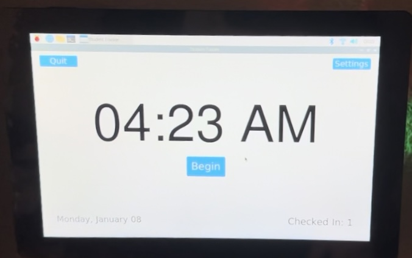
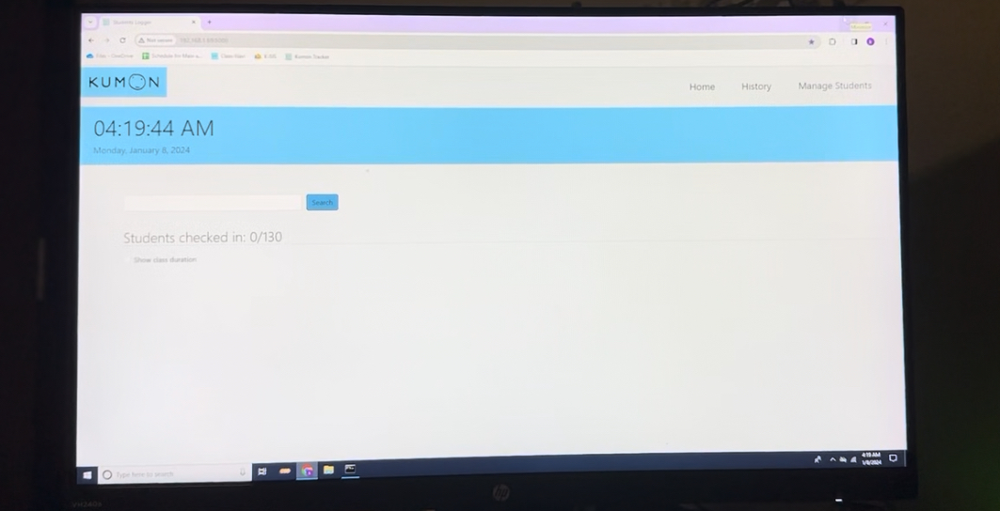

A tablet sign-in system, SMS parent-notification pipeline, and instructor web dashboard built for a Kumon Tutoring Center — still in daily use managing 150+ students.
In summer 2023 a local Kumon Tutoring Center asked me to replace their paper-based student check-in — attendance and homework completion were manually tracked, which made parent follow-up slow and logs hard to query after a session.
A full stack sitting on a Raspberry Pi at the front desk: a tablet-facing touch GUI for sign-in/sign-out, a MySQL database of student records, a Twilio SMS pipeline for parent notifications, and a Flask web interface so instructors could view live and historical data during and after class.
The system has been running continuously since deployment and is currently serving a center with more than 150 active students. I still get the occasional "a cable came loose" text, which is a lot more fun than it sounds.

